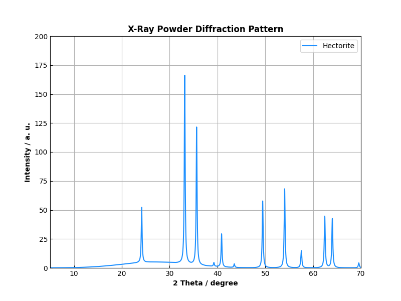

XrdQty Project
This is a Python module that builds synthetic X‑ray diffraction (XRD) patterns from mineral structural data and uses those patterns to train a convolutional neural network that can quantitatively estimate the fractions of different mineral phases present in a sample. The workflow begins by reading CSV files that contain two‑column two‑theta versus intensity data for each mineral, extracts the peak locations and intensities, and stores the mineral names. The crystal structure data is available at RRUFF Database. It then combines the individual phase contributions, weighted by user‑defined or randomly perturbed fractions, to generate a multi‑phase pattern that includes realistic background noise. Here is an example for the mineral phase of hectorite including calcite, dolomite, and hematite.

The resulting intensity profile serves as the input feature vector, while the corresponding mineral fractions constitute the target label. After generating a sizable synthetic dataset, the module trains a CNN to map raw intensity patterns directly to mineral fractions, evaluates its performance with mean absolute error, and saves the trained model for later inference on new XRD patterns.
The applied tasks in XrdQty therefore consist of three core steps:
1. Creating a diverse training set of synthetic XRD patterns that span many possible compositions, crystallite sizes, and experimental conditions;
2. Training a deep learning model — specifically a 1‑D convolutional neural network — to learn the relationship between the intensity pattern and the underlying mineral fractions;
3. Providing a prediction interface that accepts a new XRD pattern, preprocesses it with the same scaling used during training, and outputs the estimated fractions of each mineral phase. This end‑to‑end pipeline enables rapid, automated quantitative analysis of mineral mixtures without the need for manual peak fitting or extensive parameter tuning.
A convolutional neural network is particularly well suited for quantitative mineral phase analysis because XRD patterns are one‑dimensional signals that retain local structural information across the 2‑theta range. The first convolutional layer applies small kernels that slide across the intensity profile, detecting elementary peak shapes, relative heights, and subtle shoulder features that are indicative of specific crystalline phases. Max‑pooling layers follow each convolution, reducing the data dimensionality while preserving the most salient features, which makes the network robust to noise and slight shifts in peak positions. Deeper convolutional stages enlarge the receptive field, allowing the model to capture interactions between neighboring peaks and to recognize complex patterns where multiple phases overlap. Finally, fully connected layers translate the learned feature vector into a predicted vector whose components correspond to the fractions of each mineral phase. Training with mean squared error loss forces the network to minimize the discrepancy between predicted and true fractions, resulting in a model that can infer minor phases and low‑intensity contributions that traditional Rietveld refinement often struggles with.
Rietveld analysis relies on comparing an entire experimental pattern to a library of calculated patterns for each candidate phase, fitting parameters such as scale factors, preferred orientation, and background. When peak intensities are weak, when phases overlap heavily, or when impurity levels are low, the fitting process can become unstable, yielding unreliable phase fractions or failing to converge altogether. In contrast, the CNN learns directly from data-driven representations, tolerating low signal‑to‑noise ratios and overlapping peaks because it extracts hierarchical features rather than relying on explicit peak‑by‑peak modeling. This makes the machine‑learning approach faster — once trained, inference is a simple forward pass — and more reliable for real‑world samples that contain minor phases or exhibit irregular peak shapes due to crystallite size distribution, strain, or preferred orientation. The practical impact of using the CNN‑based method is a more robust and efficient workflow for chemical and physical analytics in the mineral processing and metallurgical industries. It enables rapid assessment of ore composition, real‑time monitoring of beneficiation streams, and automated quality control in blast furnace or smelting operations, where quick, accurate phase quantification can inform feedstock blending, reagent addition, and process optimization. Moreover, because the model is trained on synthetic data that can be expanded to cover a wide range of operating conditions, it generalizes well to new samples, reducing the need for extensive experimental calibration. In this way, the CNN complements traditional Rietveld methods, offering a powerful, data‑driven alternative that enhances the overall analytical capability of X‑ray diffraction in quantitative mineralogy.
GitHub: github.com/markus-schindler/XrdQty